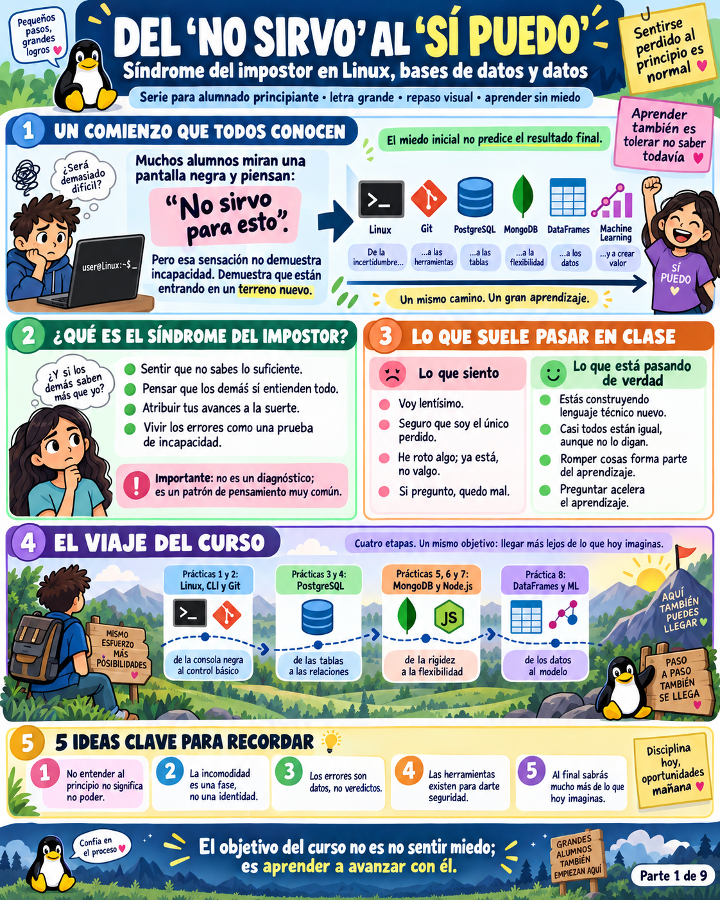
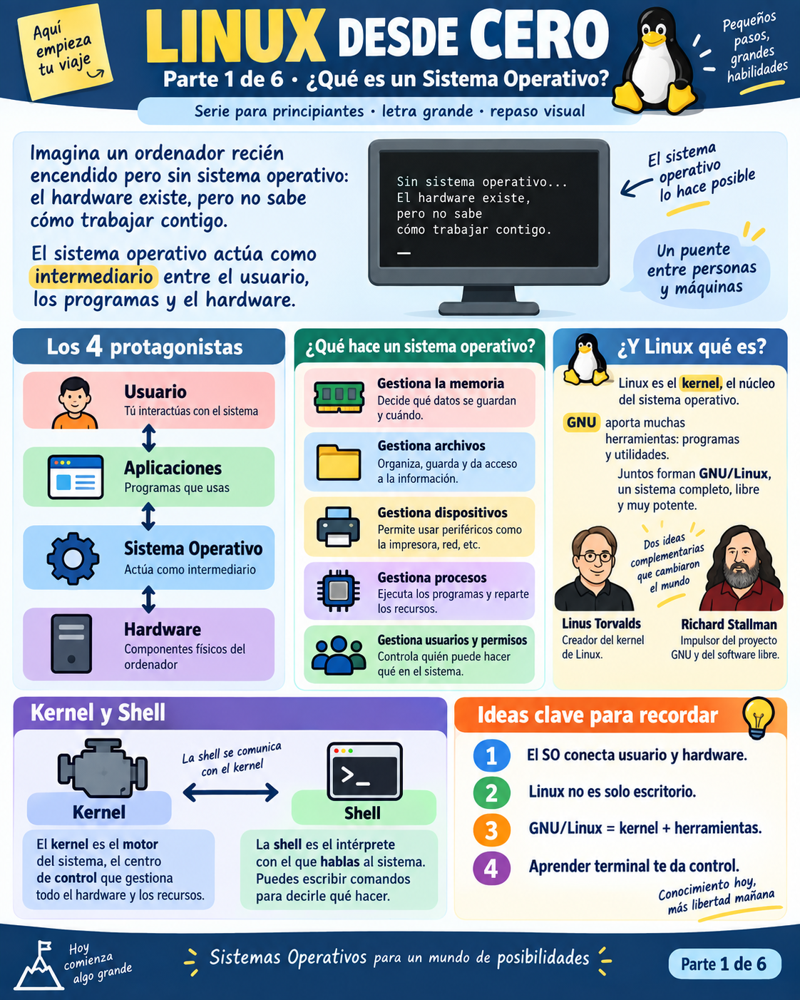
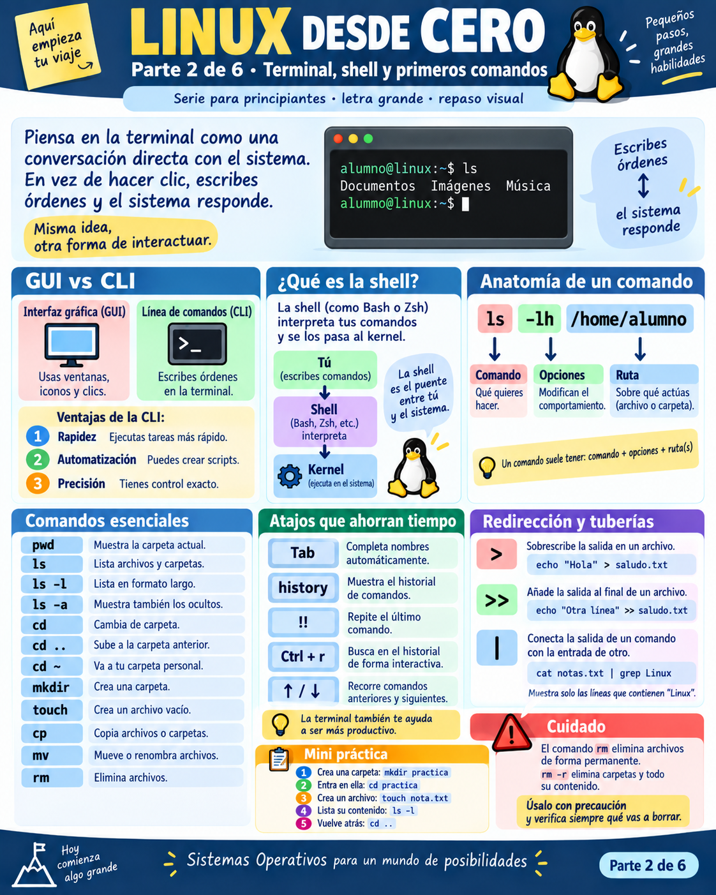
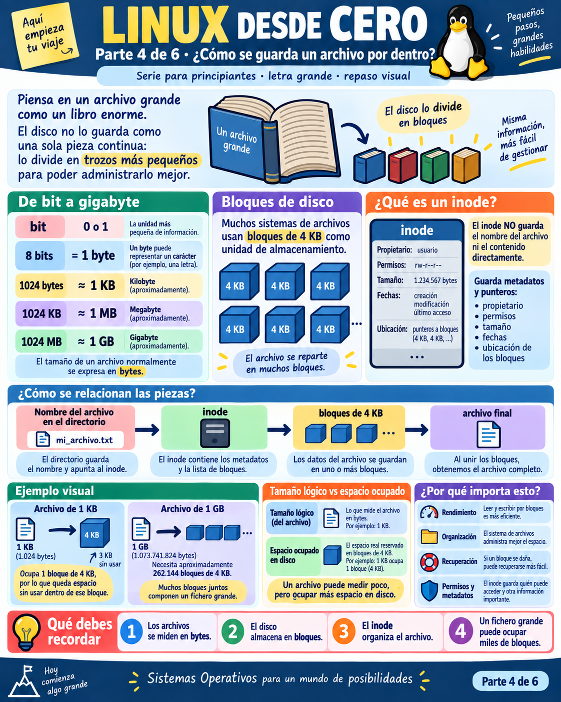
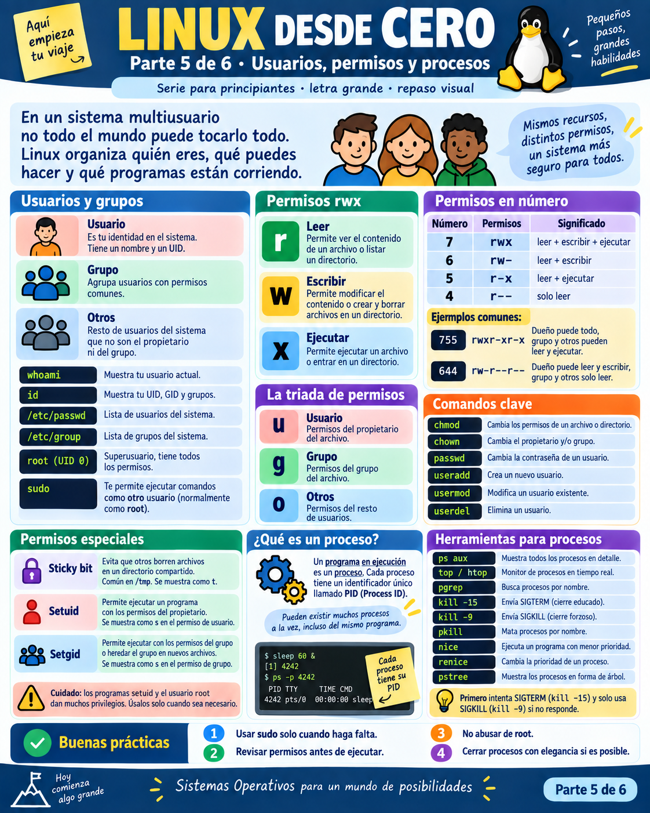

1. Presentaciones y la Búsqueda del Ikigai
Los japoneses denominan Ikigai (生き甲斐) a la confluencia armónica entre lo que amas, en lo que eres bueno, lo que el mundo necesita y por lo que te pueden pagar. En este máster buscamos que tu esfuerzo técnico conecte con tu propósito vital.
El Centro: Tu Ikigai en Tecnología
La intersección donde tu curiosidad por los datos se une a habilidades de alto valor de mercado, resolviendo problemas reales con una remuneración económica justa y sostenible.
Paso Práctico 1.1: Tu Primer Registro en la Máquina
echo escribe texto; el símbolo > redirige esa salida a un nuevo archivo llamado mi_rumbo.txt. Las expresiones $(whoami) y $(date) son sustituciones de comandos en las que Linux ejecuta órdenes y pega su resultado automáticamente.
cat (abreviatura de concatenate) lee el archivo desde el disco y lo imprime directamente en tu consola.
2. Introducción a los Perfiles en el Mundo de los Datos
1. Data Analyst (Analista de Datos)
Misión: Diagnosticar el pasado y presente del negocio.
Stack clave: SQL avanzado, Pandas, Power BI, Tableau, Metabase.
El reto: Construir métricas fiables y contar historias claras sin sesgos cognitivos.
2. Big Data & Data Engineer
Misión: Diseñar las autopistas y cañerías por donde viajan terabytes.
Stack clave: Linux, Spark, Kafka, Airflow, SQL distribuido, Docker.
El reto: Ingesta masiva en tiempo real y tolerancia total a fallos de hardware.
3. Machine Learning Engineer (MLOps)
Misión: Llevar los modelos del laboratorio a producción masiva.
Stack clave: Python, FastAPI, PyTorch, Kubernetes, MLflow, GPUs.
El reto: Servir inferencias en milisegundos y detectar cuándo el modelo pierde precisión.
4. Cloud Data Architect
Misión: Orquestar la infraestructura corporativa en la nube.
Stack clave: AWS, Google Cloud, Azure, Terraform, VPCs, IAM.
El reto: Diseñar arquitecturas elásticas y evitar costes cloud descontrolados.
3. El Síndrome del Impostor y la Humildad
⚽ El Fútbol: Un Juego con Límites Claros
El fútbol tiene reglas estables desde hace 100 años: 11 contra 11, dos porterías y un balón. Es un ecosistema acotado donde el dominio técnico se percibe inmediatamente.
💻 La Informática: Un Océano Sin Fin
En tecnología nadie sabe todo. Las librerías, arquitecturas y kernels cambian a ritmo vertiginoso. Estar perdido es el estado natural de la exploración. La humildad es la virtud que te permite aprender sin vergüenza.
Crónica Visual del Aula: Superar el Vértigo

El Cursor Parpadeante
El miedo a teclear y pensar que todos los demás entienden la terminal menos tú. La realidad: todos sienten la misma incertidumbre.
El Error es Información
Un mensaje de fallo no te dice que eres incapaz; te dice exactamente qué parámetro o permiso le falta al sistema operativo para continuar.
Git y la Tranquilidad
Git existe para que puedas equivocarte mil veces. Casi nada en software es irreversible si tienes control de versiones.
4. Sistemas Operativos: Del Silicio a Linus Torvalds
Por Qué Linux es una Habilidad Innegociable en la Nube y en la Industria
En tu día a día como estudiante o desarrollador puedes utilizar un portátil con macOS o con Windows. Sin embargo, más del 96% de los servidores del planeta, el 100% de los supercomputadores y la totalidad de la infraestructura de la nube corren sobre Linux.
🌐 ¿Dónde vive tu código en producción?
Las instancias EC2 de AWS, los contenedores Docker, los clústeres de Kubernetes, los workers de Spark y las bases de datos en Snowflake o BigQuery operan sobre kernels Linux sin interfaz gráfica (headless). Solo se administran por terminal.
🚀 El Superpoder del Diagnóstico
Un analista que no sabe Linux está ciego cuando un pipeline falla en la nube. Quien domina la terminal puede conectarse por SSH a cualquier máquina remota, investigar procesos colgados, diagnosticar cuellos de botella de red y depurar la memoria en segundos.
Paso Práctico 4.1: Consultar el Silicio y el Kernel
uname (Unix Name) con el flag -r (release) te indica la versión precisa del núcleo Linux que está coordinando los procesos en este instante.

El Kernel: El Gran Árbitro
Reparte tiempo de procesador, administra la memoria RAM y garantiza que un proceso descontrolado no tire abajo la máquina entera.

User Space vs Kernel Space
Tus programas de Python corren en espacio de usuario. Para acceder al disco o a la red deben pedir permiso al kernel mediante una Syscall.
5. Introducción a Linux: Inodos, Espacio Asignado, Enlaces y Navegación
• 1. La Entrada de Directorio (`Dentry`): Es simplemente una fila en una tabla que relaciona un nombre legible con un número de Inodo. ¡El inodo no sabe cómo se llama el archivo!
• 2. El Inodo (`Index Node`): La estructura de metadatos que almacena los permisos, el propietario, las fechas, el tamaño, el contador de enlaces duros y los punteros a los bloques de disco.
• 3. Los Bloques de Datos (`Data Blocks`): Las celdas físicas del SSD o disco duro (típicamente de 4 KB) donde se guardan los bytes reales de la información.
🔹 5.1. Anatomía Profunda del Inodo y Metadatos al Desnudo
Cada sistema de archivos (ext4, XFS, APFS) reserva una tabla fija de inodos al formatearse. Vamos a explorar qué hay exactamente al lado de un archivo en el disco:
| Campo del Inodo | ¿Qué información contiene? | ¿Por qué le importa al ingeniero de datos? |
|---|---|---|
| Tipo de Archivo | Regular (-), Directorio (d), Enlace simbólico (l), Socket (s), Pipe (p), Dispositivo (b/c). |
Permite saber si estás leyendo un CSV en disco o un flujo de datos continuo desde un socket o tubería Unix. |
| Permisos (Mode) | Bits de lectura (r=4), escritura (w=2) y ejecución (x=1) para Dueño, Grupo y Otros. | Evita que un script o proceso no autorizado modifique o borre datasets de producción. |
| Contador de Enlaces (nlink) | Número de entradas de directorio (hard links) que apuntan a este inodo específico. | Los datos no se borran del disco hasta que este contador llega exactamente a cero (0) y ningún proceso lo tiene abierto. |
| UID / GID | Identificadores numéricos del usuario propietario y del grupo de seguridad. | Gobierna la autorización en clústeres multiusuario (Hadoop, Kubernetes, servidores compartidos). |
| Tamaño Aparente (Size) | Longitud lógica del archivo en bytes (hasta el último byte escrito). | Es lo que ves en un editor, pero no siempre refleja el espacio que realmente gasta en el disco. |
| Bloques Asignados (Blocks) | Número de bloques de 512 bytes reservados físicamente por el kernel en el disco. | Determina la ocupación real del almacenamiento. Un archivo puede medir 10 GB y ocupar 0 bloques (archivos dispersos). |
| Punteros a Bloques | Direcciones de los bloques físicos o extents contiguos donde viven los datos. | El kernel sigue estos punteros para leer a máxima velocidad sin fragmentación. |
| Marcas de Tiempo (Timestamps) | atime (último acceso), mtime (última modificación del contenido), ctime (último cambio del inodo/metadatos). |
Herramientas como Make, Airflow o dbt deciden si vuelven a procesar una tabla comprobando si el mtime ha cambiado. |
-i muestra el número de inodo y -d inspecciona el directorio en sí mismo sin listar su contenido.
•
Size: 28 → Ocupa exactamente 28 caracteres/bytes lógicos.
•
Blocks: 8 → Bloques de 512 bytes reservados en el disco (8 * 512 = 4096 bytes = 4 KB).
•
IO Block: 4096 → El tamaño de lectura óptimo del hardware del disco.
•
Inode: 1572864 → El identificador único e irrepetible en esta partición.
•
Links: 1 → Solo hay un nombre apuntando a este inodo.
find . -inum [número] localiza cualquier referencia a ese inodo en el árbol.
chmod, el contenido no cambió (el mtime sigue intacto), pero el ctime (Change Time del Inodo) se actualiza al segundo exacto. ¡Así es como los sistemas de seguridad auditan si alguien tocó los permisos de un archivo confidencial!
🔹 5.2. Espacio Asignado (Allocated) vs Tamaño Aparente (Apparent Size)
• Fragmentación Interna (Slack Space): Si guardas un archivo con una sola palabra de 4 bytes, el kernel le tiene que asignar un bloque completo de 4096 bytes. Los 4092 bytes restantes quedan vacíos e inutilizables para otros archivos.
• Archivos Dispersos (Sparse Files): Archivos que tienen "agujeros" gigantes de ceros. El sistema operativo no gasta bloques reales para almacenar ceros; solo anota en el inodo que ese rango está vacío. Su tamaño aparente puede ser de 100 Gigabytes, pero su tamaño asignado real en disco puede ser de apenas unos pocos Kilobytes.
stat -f consulta la geometría del sistema de archivos donde estás parado.
•
ls -l micro.txt devuelve 3 bytes (las letras 'O', 'K' y el salto de línea `\n`). Ese es el Apparent Size.
•
du -h micro.txt (Disk Usage) devuelve 4.0K. Ese es el Allocated Space (espacio físico reservado).
•
ls -lh dice que mide 10G.
•
du -h revela que ocupa 0B en tu disco.
Las bases de datos (PostgreSQL, MySQL) y las máquinas virtuales crean archivos dispersos de este tipo para reservar rangos de direcciones sin agotar el disco físico de inmediato.
df -h diga que tienes 500 GB libres. La causa: se agotaron los inodos libres (IFree = 0).
🔹 5.3. Duelo Técnico: Hard Links vs Soft Links a Fondo
En Unix existen dos tipos de enlaces completamente distintos. Dominar su comportamiento es la diferencia entre un administrador novato y un ingeniero de datos profesional:
| Criterio Técnico | Enlace Duro (Hard Link · `ln`) | Enlace Simbólico (Soft Link · `ln -s`) |
|---|---|---|
| Número de Inodo | Exactamente el mismo que el archivo original. | Inodo nuevo, independiente y diferente. |
| ¿Qué guarda? | Es otra entrada en el directorio apuntando a los mismos bloques de datos. | Es un archivo nuevo cuyo contenido es una cadena de texto con la ruta hacia el destino. |
| Espacio físico adicional | 0 bytes extra (solo unos bytes en la tabla del directorio). | Ocupa 1 inodo nuevo y un pequeño bloque para almacenar la ruta de texto. |
| Si borras el original (`rm`) | Los datos sobreviven 100% intactos en el enlace duro. | El enlace simbólico queda roto (dangling link) e inservible. |
| ¿Puede cruzar particiones? | ❌ No. Los números de inodo son válidos únicamente dentro de su propio disco/partición. | ✔️ Sí. Al ser una ruta de texto, puede apuntar a cualquier disco, USB o carpeta de red. |
| ¿Permitido en carpetas? | ❌ No (el kernel lo prohíbe para evitar bucles infinitos en el árbol). | ✔️ Sí (muy utilizado para crear accesos directos a carpetas). |
1. La primera columna (el número de inodo) es idéntica en ambos archivos.
2. La tercera columna (el contador de enlaces duros) ahora vale 2. Ambos nombres son exactamente el mismo archivo físico.
clientes_duro.csv y al leer clientes_original.csv ya aparece la nueva línea. No hubo copia ni duplicación: ambos nombres leen los mismos bloques del disco.
rm no borra datos: hace un `unlink` (desvincula un nombre del inodo). Al borrar el original, el contador de enlaces baja de 2 a 1. Como todavía queda un enlace (clientes_duro.csv), el inodo y los bloques de datos siguen vivos al 100%.
• El tipo de archivo empieza por
l (symlink): lrwxrwxrwx.
• Tiene un número de Inodo completamente distinto al de
clientes_duro.csv.
• Su tamaño en bytes es exactamente la cantidad de letras que tiene la palabra «clientes_duro.csv» (17 bytes).
cat la terminal arroja:
find . -xtype l el sistema te lista al instante todos los enlaces huérfanos para limpiarlos.
1. Lanzamos un proceso de Python que crea un archivo de 10 MB y lo mantiene abierto en segundo plano.
2. Ejecutamos
rm archivo_pesado.log. El archivo desaparece de `ls`.
3. Sin embargo, el espacio en disco NO se libera. ¿Por qué? Porque el kernel de Linux mantiene vivos los bloques del inodo mientras haya al menos un proceso con el archivo abierto en memoria.
4. El comando
lsof | grep deleted delata al proceso culpable. Solo cuando el proceso finaliza o lo matas con kill, el kernel libera finalmente los bloques físicos de almacenamiento.
🔹 5.4. Navegación, Creación y Manipulación Ágil de Archivos
pwd (Print Working Directory) devuelve la ruta absoluta completa desde la raíz hasta tu directorio actual.
-l: Formato largo (permisos, dueño, tamaño).•
-a: Muestra todos los archivos (incluyendo ocultos que empiezan con punto).•
-S: Ordena de mayor a menor tamaño.•
-h: Tamaños en formato legible (KB, MB, GB).
-p creas los directorios padres y con las llaves {a,b,c} expandes múltiples subdirectorios en un único comando instantáneo.
atime y mtime sin alterar el contenido interno.
-v (verbose) confirma por consola el origen y el destino de cada movimiento para que no operes a ciegas.
🔹 5.5. Comandos para Ver y Explorar Datos (head, tail, wc, less, nano, vim)
cat a un archivo de 20 GB. Con head -n 5 ves las 5 primeras líneas para entender el esquema y con tail -n 5 verificas los últimos datos registrados.
wc -l (Word Count - Lines) cuenta los caracteres de nueva línea \n sin cargar el archivo completo en la memoria RAM de tu máquina.
📖 Paginador `less`: Tu Mejor Amigo
Comando: less telemetria.csv
Abre archivos de 100 GB al instante porque solo carga en RAM la página que estás viendo en la pantalla.
• Espacio: Avanzar página.
• b: Retroceder página.
• /Centro: Buscar la palabra "Centro" hacia adelante (pulsa n para ir al siguiente resultado).
• q: Salir limpiamente sin dejar residuos en tu terminal.
✏️ Editores en Servidor: `nano` vs `vim`
nano archivo.txt: Muy visual e intuitivo. Guardar: Ctrl+O y luego Enter; Salir: Ctrl+X.
vim archivo.txt: El estándar omnipresente en servidores Linux. Tiene dos modos:
• Pulsa la tecla i para entrar en modo INSERTAR y escribir.
• Pulsa Esc y luego escribe :wq + Enter para guardar y salir.
• Si te equivocas: Esc y :q! + Enter (salir sin guardar).
6. Gestión de Usuarios, Seguridad y Permisos Unix
rwx (Lectura, Escritura y Ejecución) para Usuario, Grupo y Otros.
Paso Práctico 6.1: Identidad y Permisos Octales
uid (generalmente 1000 o 501 para el primer usuario) y la lista de grupos a los que perteneces.
.exe define si un archivo es ejecutable. En Linux no importa la extensión: manda el bit x (execute) otorgado con chmod +x.
600 significa:
• Usuario = 6 (4 lectura + 2 escritura).• Grupo = 0 (ningún permiso).
• Otros = 0 (ningún permiso). Solo tu usuario puede leer o editar este archivo de secretos.
7. Conexión de Red: IPs, Puertos, Sockets y Firewalls
Paso Práctico 7.1: Diagnóstico de Red en Vivo
ss (Socket Statistics) muestra todos los puertos TCP y UDP que tienen procesos esperando conexiones.
nc -zv prueba un handshake TCP rápido hacia un puerto sin abrir navegadores ni clientes pesados.
8. Shell Scripting Básico: Variables, Condicionales, Bucles, Arrays y Funciones
🔹 8.1. El Shebang y las Variables Nativas
En Bash las variables no necesitan declarar tipo (número o texto) y se asignan estrictamente sin espacios alrededor del signo igual =:
•
#!/usr/bin/env bash (El Shebang): Le indica al kernel qué intérprete exacto debe ejecutar el archivo. Usar env bash garantiza portabilidad entre Linux, macOS y servidores cloud.
• Asignación:
NOMBRE="valor". ¡Ojo! Si escribes NOMBRE = "valor" con espacios, Bash pensará que NOMBRE es un comando y fallará.
• Lectura: Se usa el símbolo de dólar
$NOMBRE o ${NOMBRE} para leer el contenido.
🔹 8.2. El Truco Maestro del Código de Salida: `$?`
En Unix y Linux todo comando devuelve un número entre 0 y 255 al finalizar. Esta es la regla de oro que debes tatuarte en la mente:
• `0` = ÉXITO TOTAL (el comando hizo su trabajo limpiamente).
• Cualquier número distinto de cero (`1`, `2`, `127`...) = ERROR / FALLO.
•
echo "Prueba" tuvo éxito → $? vale 0.
•
ls a una carpeta inexistente falló → $? vale 2.
En pipelines de datos profesionales usamos
$? para verificar si una descarga o un backup funcionó antes de borrar archivos antiguos.
./script.sh archivo1 archivo2, Bash los captura automáticamente en $1, $2 y cuenta cuántos pasaste con $#.
🔹 8.3. Estructuras Condicionales `if ... else ... fi`
Los condicionales en Shell Scripting utilizan corchetes [ condición ]. Los espacios dentro de los corchetes son estrictamente obligatorios.
| Operador de Condición | ¿Qué comprueba? | Ejemplo Práctico |
|---|---|---|
-f "$archivo" |
¿Existe y es un archivo regular? | if [ -f "datos.csv" ]; then ... |
-d "$carpeta" |
¿Existe la carpeta o directorio? | if [ -d "backups" ]; then ... |
-s "$archivo" |
¿Existe y su tamaño es mayor a 0 bytes (no está vacío)? | if [ -s "resultado.csv" ]; then ... |
-z "$variable" |
¿La cadena de texto está vacía (longitud cero)? | if [ -z "$API_KEY" ]; then echo "Falta clave"; fi |
-eq / -ne / -gt |
Comparación numérica: igual, distinto, mayor que. | if [ "$FILAS" -gt 1000 ]; then ... |
[ -s "$ARCHIVO" ] antes de lanzar un cálculo pesado para no procesar archivos corruptos de 0 bytes.
🔹 8.4. La Curiosidad de los Arrays en Bash y Bucles `for`
A diferencia de Python o JavaScript, los Arrays en Bash se declaran con paréntesis y elementos separados por espacios (¡sin comas!). Son herramientas increíblemente útiles para recorrer listas de servidores o tablas:
•
${ARRAY[0]} → Accede al índice 0.
•
${ARRAY[@]} → Extrae todos los elementos de la lista.
•
${#ARRAY[@]} → El símbolo almohadilla # devuelve la longitud total del array.
for variable in "${ARRAY[@]}"; do ... done recorre cada elemento individualmente protegiendo espacios y nombres complejos.
🔹 8.5. Funciones en Shell: Reutilización y Parámetros
En Bash las funciones se comportan como "mini-scripts" dentro de tu código. Tienen su propio ámbito de parámetros donde $1 y $2 representan los argumentos recibidos por la función:
•
local variable="$1": Crea una variable que vive únicamente dentro de la función sin contaminar el resto del script.
• La llamada se hace sin paréntesis:
crear_copia_segura "param1" "param2".
•
return $?: Devuelve el código de salida numérico de la última instrucción ejecutada.
🔹 8.6. Programa Integrador: Auditor y Limpiador de Datasets (Sin AWK)
Este script completo combina Arrays, Bucles for, Funciones, Condicionales if y comprobación con `$?` utilizando exclusivamente herramientas estándar transparentes (grep, wc -l, cut):
cat << 'EOF' > auditor_datasets.sh
#!/usr/bin/env bash
# ========================================================
# Script Maestro: Auditoria y Filtrado de Logs en Shell
# (100% Nativo, sin AWK ni herramientas cripticas)
# ========================================================
# 1. Definimos un array con los nombres de datasets a evaluar
DATASETS_A_REVISAR=("transacciones_enero.csv" "transacciones_febrero.csv" "transacciones_marzo.csv")
# 2. Generamos datos de prueba con diferentes estados
echo "ID,MONTO,ESTADO" > transacciones_enero.csv
echo "101,450,EXITO" >> transacciones_enero.csv
echo "102,120,FALLO" >> transacciones_enero.csv
echo "103,990,EXITO" >> transacciones_enero.csv
# Creamos febrero pero lo dejamos vacio a 0 bytes
touch transacciones_febrero.csv
# (marzo NO lo creamos para probar la deteccion de archivos faltantes)
# 3. Funcion que audita un archivo individual recibido en $1
auditar_archivo() {
local archivo="$1"
echo "--------------------------------------------------------"
echo "🔍 Auditando: $archivo"
# Condicional 1: ¿Existe el archivo?
if [ ! -f "$archivo" ]; then
echo " ❌ Estado: NO EXISTE en el sistema."
return 1
fi
# Condicional 2: ¿Tiene contenido mayor a 0 bytes?
if [ ! -s "$archivo" ]; then
echo " ⚠️ Estado: Archivo VACIO (0 bytes de datos)."
return 2
fi
# Recuento de lineas limpias sin awk
local total_filas=$(wc -l < "$archivo")
echo " ✔️ Estado: Correcto ($total_filas filas encontradas)."
# Filtramos con grep cuantas transacciones terminaron en EXITO
local exitos=$(grep -c "EXITO" "$archivo")
echo " 💰 Registros con EXITO: $exitos"
return 0
}
# 4. Bucle que recorre el Array de datasets
echo "=== INICIANDO AUDITORIA GENERAL DE ARCHIVOS DE DATOS ==="
for ds in "${DATASETS_A_REVISAR[@]}"; do
auditar_archivo "$ds"
codigo_resultado=$?
if [ $codigo_resultado -ne 0 ]; then
echo " 🔔 Alerta: El archivo $ds requiere atencion del equipo."
fi
done
echo "========================================================"
echo "Auditoria concluida exitosamente."
EOF
# Otorgamos permisos y ejecutamos
chmod +x auditor_datasets.sh
./auditor_datasets.sh1. Recorres colecciones dinámicas de archivos con un
Array en Bash.
2. Modularizas tu código con una
función reutilizable que recibe parámetros en $1.
3. Aplicas validación defensiva comprobando si el archivo existe (
-f) y si contiene bytes (-s).
4. Utilizas
grep -c para contar coincidencias de forma transparente y legible sin necesidad de código críptico en awk.
5. Capturas el código de salida con
$? para decidir si lanzas una alerta o continúas con la siguiente tarea del pipeline.
9. Git Fundamentos: Working Directory, Staging y Ramas

Los 3 Estados de Git
Working Directory (lo que editas), Staging Area (lo que seleccionas con `git add`) y Commit (la foto guardada para siempre).

Ramas Ligeras
Crear una rama en Git tarda 2 milisegundos y pesa 41 bytes. Te permite experimentar sin peligro de romper la rama principal.
Paso Práctico 9.1: Tu Primer Repositorio en Git
.git donde vive la base de datos de control de versiones.
git add prepara el archivo en el escenario; git commit guarda la foto permanente con un mensaje descriptivo.
feature-limpieza y salta inmediatamente a ella. Cualquier cambio que hagas no afectará a la rama principal main.
10. Repositorios Git Remotos: Push, Pull y Compartir
git push (subir) y git pull (descargar).

Modelo Descentralizado
Cada desarrollador tiene una copia íntegra de la base de datos de versiones en su propio portátil.

Push & Pull
`push` envía tus fotos (commits) al servidor; `pull` descarga las novedades aportadas por tus compañeros.
Paso Práctico 10.1: Conectar con GitHub
origin a la URL de tu repositorio remoto.
main y el modificador -u establece el vínculo de seguimiento para que en el futuro baste con escribir git push.
11. Conflictos en Git: Provocarlos y Resolverlos
🔹 Laboratorio Guiado de Conflicto en Vivo
Vamos a generar intencionadamente un conflicto para aprender a resolverlo sin pánico:
# 1. En la rama main definimos la IP de producción
git switch main 2>/dev/null || git checkout main
echo "DATABASE_HOST = '10.0.0.50'" > conexion.py
git commit -am "fix(main): asignar IP interna de base de datos"
# 2. Creamos una rama y modificamos esa MISMA línea
git switch -c feature-db-cloud
echo "DATABASE_HOST = 'db.cloud.ufv.es'" > conexion.py
git commit -am "feat(cloud): asignar dominio cloud"
# 3. Volvemos a main e intentamos fusionar: ¡CONFLICTO!
git switch main
git merge feature-db-cloud🚨 Mensaje en consola y marcas de conflicto en `conexion.py`:
CONFLICT (content): Merge conflict in conexion.py
Automatic merge failed; fix conflicts and then commit the result.
<<<<<<< HEAD (lo que tenías en main)
DATABASE_HOST = '10.0.0.50'
=======
DATABASE_HOST = 'db.cloud.ufv.es'
>>>>>>> feature-db-cloud (lo que traes de la rama)
Cómo resolverlo: Abre el archivo con tu editor (VS Code o `nano conexion.py`). Borra los marcadores <<<<<<<, ======= y >>>>>>>. Deja solo la línea que debe prevalecer, guarda y ejecuta:
git add conexion.py && git commit -m "fix: resolver conflicto unificando conexion a base de datos"
12. HTML5, CSS3 & GitHub Pages: De la Terminal a tu CV en Internet
🌐 Fundamentos de HTML: ¿Qué es el "Marcado" y Principales Tipos de Etiquetas?
¿Qué significa realmente "Marcado" (Markup)?
HTML significa HyperText Markup Language. No es un lenguaje de programación procedimental (no compila, no tiene bucles while ni asigna memoria como C o Python). Es un lenguaje declarativo de estructura.
El término proviene del mundo editorial tradicional, donde los correctores "marcaban" en los márgenes de un manuscrito qué texto debía ser un título, qué debía ser una cita o qué debía ir en negrita. En la web, envolvemos el texto plano con etiquetas (<tags>) para dotarlo de significado semántico y jerarquía para el navegador.
Anatomía de una Etiqueta y el Árbol DOM
Una etiqueta estándar se compone de:
Existen también etiquetas autocontenidas o vacías (void tags) que no tienen cierre porque no albergan texto en su interior: <img />, <input />, <meta />, <hr />, <br />. Todas ellas construyen el DOM (Document Object Model): una estructura de árbol en memoria donde cada etiqueta es un nodo accesible por CSS y JavaScript.
📚 Los 6 Principales Tipos de Elementos HTML
Define los grandes bloques del documento. Vital para SEO en Google y lectores de accesibilidad.
Encabezados del documento (sólo un <h1> principal por página), párrafos y fragmentos de código técnico.
Modifican pequeñas porciones de texto dentro de un párrafo sin romper el flujo de lectura.
Listas sin orden (viñetas), con orden (números) y listas descriptivas de términos o glosarios.
La esencia del hipertexto: conectar páginas entre sí y embeber gráficos vectoriales, fotos y vídeos.
Captura de inputs del usuario y presentación de datos tabulares matriciales en filas y celdas.
🧱 Comportamiento de Flujo: Elementos de Bloque vs Elementos de Línea
Comprender cómo se comporta naturalmente cada elemento en la pantalla antes de aplicar estilos es fundamental para no frustrarse con CSS:
| Categoría | Comportamiento por Defecto | Propiedades de Caja | Ejemplos Típicos |
|---|---|---|---|
| Block (Bloque) | Ocupa el 100% del ancho disponible de su contenedor padre. Fuerza un salto de línea antes y después. | Admite width, height, y todos los márgenes y paddings en los 4 costados. |
<div>, <p>, <h1>-<h6>, <section>, <ul>, <li> |
| Inline (Línea) | Fluye de izquierda a derecha junto con el texto. No rompe la línea; sólo ocupa el ancho que necesita su contenido. | Ignora width y height directos; sólo acepta márgenes horizontales (left/right). |
<span>, <a>, <strong>, <em>, <code> |
| Inline-Block | Híbrido ideal: convive en la misma línea como un inline, pero permite definir dimensiones exactas de bloque. | Respeta width, height, márgenes y paddings verticales y horizontales completos. |
<button>, <input>, <img> |
🎨 CSS: La Cascada, Prevalencia de Selectores y el Poder Supremo de `!important`
⚖️ La Gran Jerarquía de Prevalencia: ¿Qué Gana a Qué?
El cálculo de especificidad en CSS se calcula habitualmente con una tupla de cuatro columnas (Inline, ID, Clase, Elemento). A continuación, el orden estricto de menor a mayor poder:
!important
PREVALECE SOBRE TODO
Cualquier propiedad que termine con !important (ej. color: red !important;) anula de un plumazo todas las reglas de especificidad convencionales: vence a IDs, vence a Clases, vence a Pseudoclases y vence a estilos inline en la etiqueta.
!important sin justificación se considera mala práctica porque rompe la naturaleza predictiva de la cascada y provoca "guerras de !important" imposibles de mantener. Debe reservarse únicamente para clases utilitarias de máxima prioridad (ej: forzar ocultamiento .hidden { display: none !important; }) o para sobreescribir librerías CSS externas que no puedes editar.
Estilos inyectados directamente en el atributo HTML del elemento (ej: <h1 style="color: blue;">). Gana a cualquier selector de ID o clase escrito en la cabecera o en archivos .css externos.
#mi-identificador)
Puntos: (0, 1, 0, 0)
PREVALECE categóricamente sobre Clases y Pseudoclases. Un ID representa un elemento único en la página. Un único ID (ej. #cv-nombre) derrota en especificidad a una regla con 10 clases encadenadas (ej. .titulo.destacado.grande.azul...).
.clase), Pseudoclases (:hover) y Atributos ([type])
Puntos: (0, 0, 1, 0)
Prevalecen sobre los selectores de elemento simple.
.btn y :hover, empatan y gana la regla que se haya declarado más abajo en el CSS. Al combinarse (.btn:hover), suman sus puntos convirtiéndose en (0, 0, 2, 0).
p, h1, div) y Pseudoelementos (::before)
Puntos: (0, 0, 0, 1)
El escalón base de selección directa. Cualquier clase o ID vence a una etiqueta pura.
El selector universal * y los combinadores (+, >, ~) tienen especificidad (0, 0, 0, 0). Si dos selectores tienen idéntica puntuación de especificidad (ej: dos clases .rojo y .azul), prevalece la que aparezca más abajo en el archivo CSS.
🥊 Demostración en Vivo: "¿Quién Gana el Color?"
Supongamos que aplicamos todas estas reglas simultáneamente sobre el mismo botón de tu CV:
| Selector Declarado | Cálculo (Inline, ID, Class, Element) | Color Propuesto | ¿Prevalece? |
|---|---|---|---|
button |
(0, 0, 0, 1) |
Gris (#666) | ❌ Pierde contra cualquier clase o ID |
.btn-contact |
(0, 0, 1, 0) |
Azul (#0284c7) | ❌ Pierde contra el ID |
.btn-contact:hover |
(0, 0, 2, 0) |
Morado (#c084fc) | ❌ Pierde contra el ID (1 ID > 2 Clases) |
#btn-contratar |
(0, 1, 0, 0) |
Verde (#34d399) | ✅ GANA a todas las clases y pseudoclases |
style="color: orange;" |
(1, 0, 0, 0) |
Naranja (#fbbf24) | ✅ Gana al ID (si se escribe inline) |
.btn-contact { color: gold !important; } |
ROMPE ESPECIFICIDAD | Dorado (#ffd700) | 👑 ¡GANA A TODOS! Anula al ID e incluso al inline |
🔹 Paso 12.1: Generar el archivo `index.html` de tu CV con Marcado Semántico y CSS
<header>, <main>, <section>, <footer>), selectores de ID, clases, pseudoclase interactiva :hover y comentarios pedagógicos sobre la cascada en el propio código.
mkdir -p ~/mi-cv-profesional && cd ~/mi-cv-profesional
cat << 'EOF' > index.html
<!DOCTYPE html>
<html lang="es">
<head>
<meta charset="utf-8">
<meta name="viewport" content="width=device-width, initial-scale=1.0">
<title>CV Profesional · Ingeniero de Datos & Linux</title>
<style>
/* ====================================================
1. ELEMENTOS BASE (Especificidad baja: 0, 0, 0, 1)
==================================================== */
* { box-sizing: border-box; margin: 0; padding: 0; }
body {
font-family: system-ui, -apple-system, 'Segoe UI', Roboto, sans-serif;
background-color: #0b1120;
color: #f8fafc;
line-height: 1.6;
padding: 40px 20px;
}
/* ====================================================
2. SELECTORES DE CLASE (Especificidad: 0, 0, 1, 0)
==================================================== */
.cv-container {
max-width: 780px;
margin: 0 auto;
background: #1e293b;
padding: 40px;
border-radius: 20px;
border: 1px solid #334155;
box-shadow: 0 20px 45px rgba(0, 0, 0, 0.5);
}
.badge-status {
display: inline-block;
background: rgba(56, 189, 248, 0.15);
color: #38bdf8;
border: 1px solid #38bdf8;
padding: 4px 12px;
border-radius: 999px;
font-size: 0.75rem;
font-weight: 700;
letter-spacing: 0.05em;
text-transform: uppercase;
margin-bottom: 12px;
}
.skill-pill {
display: inline-block;
background: #0f172a;
padding: 6px 14px;
border-radius: 8px;
margin: 4px;
font-size: 0.86rem;
border: 1px solid #334155;
color: #cbd5e1;
transition: all 0.2s ease;
}
/* ====================================================
3. PSEUDOCLASES (Suman especificidad: 0, 0, 2, 0)
==================================================== */
.skill-pill:hover {
border-color: #38bdf8;
color: #38bdf8;
transform: translateY(-2px);
}
.btn-contact {
display: inline-flex;
align-items: center;
gap: 8px;
background: #38bdf8;
color: #0b1120;
border: none;
padding: 12px 24px;
border-radius: 10px;
font-weight: 800;
font-size: 0.95rem;
cursor: pointer;
margin-top: 24px;
transition: all 0.2s ease;
}
.btn-contact:hover {
background: #7dd3fc;
box-shadow: 0 0 20px rgba(56, 189, 248, 0.4);
}
/* ====================================================
4. SELECTOR DE ID (Gana a Clases: 0, 1, 0, 0)
==================================================== */
#cv-header-title {
color: #f1f5f9;
font-size: 2.3rem;
font-weight: 800;
margin-bottom: 6px;
}
/* Demostración de prevalencia de ID sobre clase */
.destacado { color: #94a3b8; }
#perfil-bio { color: #38bdf8; font-size: 1.05rem; }
/* Demostración didáctica de !important */
.urgent-banner {
background: rgba(52, 211, 153, 0.1) !important;
border: 1px solid #34d399 !important;
}
</style>
</head>
<body>
<!-- CONTENEDOR SEMÁNTICO PRINCIPAL -->
<main class="cv-container">
<!-- CABECERA SEMÁNTICA -->
<header>
<span class="badge-status">🎓 UFV Data Science & AI Bootcamp</span>
<h1 id="cv-header-title">Tu Nombre y Apellidos</h1>
<p id="perfil-bio" class="destacado">
Especialista en Automatización de Sistemas Linux, Control de Versiones con Git y Pipelines de Datos.
</p>
</header>
<hr style="border:0; border-top:1px solid #334155; margin: 26px 0;">
<!-- SECCIÓN DE HABILIDADES Y TECNOLOGÍAS -->
<section>
<h2 style="color:#f8fafc; font-size:1.25rem; margin-bottom:14px;">🛠️ Stack Tecnológico Dominado</h2>
<div>
<span class="skill-pill">🐧 Linux & Kernel Internals</span>
<span class="skill-pill">⚡ Bash Scripting & Automatización</span>
<span class="skill-pill">🌿 Git & GitHub Colaborativo</span>
<span class="skill-pill">🐍 Python para Análisis de Datos</span>
<span class="skill-pill">🌐 HTML5 Semántico & CSS3</span>
</div>
</section>
<!-- SECCIÓN DE PROYECTOS TÉCNICOS -->
<section style="margin-top: 26px;">
<h2 style="color:#f8fafc; font-size:1.25rem; margin-bottom:14px;">🚀 Proyectos Destacados del Bootcamp</h2>
<article style="background:#0f172a; padding:16px; border-radius:10px; border:1px solid #334155; margin-bottom:12px;">
<h3 style="color:#38bdf8; font-size:1rem; margin-bottom:4px;">Auditor Automatizado de Logs y Procesos (Bash)</h3>
<p style="color:#94a3b8; font-size:0.88rem;">
Script industrial para auditar inodos, detectar procesos zombies y monitorear memoria RAM en servidores Linux.
</p>
</article>
<article style="background:#0f172a; padding:16px; border-radius:10px; border:1px solid #334155;">
<h3 style="color:#34d399; font-size:1rem; margin-bottom:4px;">Flujo de Ramas y Resolución de Conflictos (Git)</h3>
<p style="color:#94a3b8; font-size:0.88rem;">
Gestión avanzada de ramas feature/, cherry-pick y resolución limpia de conflictos en producción.
</p>
</article>
</section>
<!-- PIE DE PÁGINA CON BOTÓN INTERACTIVO -->
<footer>
<button id="btn-contratar" class="btn-contact" onclick="contactar()">
📬 ¡Contactar para Oportunidades!
</button>
</footer>
</main>
<script>
function contactar() {
alert('¡Gracias por visitar mi perfil técnico! Desplegado con éxito en GitHub Pages mediante Git.');
}
</script>
</body>
</html>
EOF🔹 Paso 12.2: Inicializar Git y subir a GitHub
🔹 Paso 12.3: Activar GitHub Pages en 3 Pasos
Crea el Repo
En github.com crea un nuevo repositorio público (ej. mi-cv) y sube tu código con git push.
Ajustes > Pages
Ve a Settings → Pages. En Branch selecciona la rama main y carpeta / (root).
¡Web Pública!
GitHub construirá tu página y te dará una URL pública accesible desde cualquier móvil o portátil:https://usuario.github.io/mi-cv
13. Linux, Git & Arquitectura Cloud: De la Terminal a la Nube (AWS, GCP, Azure)
🐧 13.1. Linux: El Sustrato Invisible de las Máquinas Virtuales y Contenedores
La Realidad de las Máquinas Virtuales (VMs)
Ya sea que alquiles una instancia EC2 en AWS, un Compute Engine en Google Cloud (GCP) o una Virtual Machine en Microsoft Azure, en el 95%+ de los casos estarás creando una máquina con una distribución Linux (Ubuntu Server, Debian, Rocky Linux o Amazon Linux).
En estos servidores en la nube no existe ratón ni entorno gráfico de escritorio: operan en modo headless. Cada tarea de aprovisionamiento, mantenimiento, monitorización de RAM y respuesta a incidentes a las 3:00 AM se realiza exclusivamente a través de una conexión SSH y una terminal Bash.
La Verdad Técnica sobre Docker y Kubernetes
Un contenedor Docker NO es una máquina virtual completa: no simula hardware ni corre un kernel independiente. Un contenedor es simplemente un proceso estándar de Linux aislado mediante dos primitivas nativas del kernel:
- Namespaces: Aíslan lo que el proceso puede ver (sus propios procesos PID, su red privada virtual, sus usuarios y sus puntos de montaje de archivos).
- cgroups (Control Groups): Limitan lo que el proceso puede consumir (tope máximo de memoria RAM, cuota de núcleos de CPU y velocidad de E/S en disco).
💡 Si no comprendes Linux, estarás completamente a ciegas cuando un Pod de Kubernetes falle en producción por OOMKilled (Out Of Memory) o CrashLoopBackOff.
🌿 13.2. Git: El Motor Universal de Despliegues y Pipelines CI/CD
🔄 ¿Cómo Llega tu Código a Cualquier Servidor del Mundo?
En el desarrollo profesional nunca se envían archivos comprimidos en .zip por correo o carpetas por FTP a un servidor. Git es la columna vertebral de la distribución de software moderna:
Cualquier máquina virtual recién encendida en Frankfurt, Virginia o Tokio puede ejecutar un git clone y quedar sincronizada con la versión exacta y libre de errores en segundos gracias al hash inmutable del commit.
Un evento git push activa un pipeline automático (en GitHub Actions o GitLab CI). Una máquina virtual Linux efímera arranca, pasa las pruebas unitarias, empaqueta el contenedor Docker y lo despliega sin intervención manual.
En arquitecturas cloud avanzadas, la infraestructura entera (redes, bases de datos, permisos) se define en código (Terraform / K8s manifests). Si alguien borra un servidor por error, el sistema lee Git y lo reconstruye idéntico automáticamente.
🏛️ 13.3. Introducción a la Arquitectura Cloud: Los 5 Pilares Fundamentales
📈 1. Escalabilidad y Elasticidad (Scale-Up vs. Scale-Out)
ADAPTACIÓN DINÁMICALa capacidad de un sistema de responder con solvencia ante aumentos masivos de carga sin degradar el tiempo de respuesta:
Aumentar los recursos físicos de una sola máquina virtual (pasar de 4 GB a 64 GB de RAM). Tiene un límite físico máximo de hardware y suele requerir reiniciar el servidor.
Añadir más máquinas virtuales o réplicas de contenedores en paralelo. Mediante Auto Scaling Groups y Balanceadores de Carga (Load Balancers), el sistema detecta picos de tráfico y levanta decenas de servidores en minutos, apagándolos automáticamente cuando la demanda baja para minimizar costes.
🛡️ 2. Tolerancia a Fallos y Alta Disponibilidad (Fault Tolerance & High Availability)
RESILIENCIA TOTALEn arquitectura cloud existe una ley fundamental dictada por Werner Vogels (CTO de Amazon): "Everything fails, all the time" (Todo falla, todo el tiempo). El hardware se rompe, las placas de red se queman y los cortes de suministro ocurren. La excelencia radica en diseñar el software asumiendo que el fallo ocurrirá:
- Zonas de Disponibilidad (Availability Zones / AZs): Cada región de la nube (ej. España, Irlanda, Virginia) cuenta con al menos 3 centros de datos físicos independientes separados por varios kilómetros, con subestaciones eléctricas y redes redundantes. Un sistema tolerante a fallos siempre distribuye sus máquinas virtuales entre al menos 2 AZs diferentes.
- Autoreparación (Self-Healing): Sondas de salud periódicas (Health Checks). Si una máquina virtual o pod deja de responder durante 30 segundos, el orquestador la destruye y levanta un reemplazo sano automáticamente sin que los usuarios perciban la caída.
🌐 3. Comunicación y Topología de Redes (Networking & Decoupling)
CONECTIVIDAD AISLADA¿Cómo viajan los datos entre componentes sin exponerse a internet público?
- VPC / VNet (Virtual Private Cloud): Una red lógica privada totalmente aislada donde despliegas tus máquinas virtuales con rangos de IPs internas (ej.
10.0.0.0/16). - Subredes Públicas vs. Privadas: La regla de oro de la seguridad: las bases de datos y los servidores de procesamiento NUNCA tienen IP pública; residen en subredes privadas. Solo los balanceadores y pasarelas de entrada residen en la subred pública.
- Mensajería Asíncrona (Colas y Eventos): En lugar de conexiones HTTP síncronas que pueden bloquearse, los microservicios se comunican mediante colas de mensajes (AWS SQS/SNS, Google Pub/Sub, Kafka). Si el procesador de datos está ocupado, los mensajes esperan ordenados en la cola sin perderse jamás.
🔒 4. Seguridad, Identidad y el Modelo de Responsabilidad Compartida
DEFENSA EN PROFUNDIDADLa seguridad en la nube no se delega ciegamente en el proveedor: se rige por el Modelo de Responsabilidad Compartida:
| El Proveedor Cloud Asegura (Seguridad DE la Nube) | TÚ Aseguras (Seguridad EN la Nube) |
|---|---|
| Seguridad física de los centros de datos, guardias, cámaras biométricas. | Parches y actualizaciones del sistema operativo Linux de tus VMs. |
| Hardware de servidores, cables submarinos y suministro eléctrico redundante. | Gestión de usuarios, contraseñas y llaves privadas SSH (permisos chmod 400). |
| Aislamiento de la capa de virtualización e hipervisor. | Configuración de cortafuegos virtuales (Security Groups) y cifrado de datos. |
🔑 IAM (Identity and Access Management): Principio del Mínimo Privilegio (Least Privilege). Nunca se comparten claves maestras; cada máquina virtual asume un Rol de Servicio temporal con permisos estrictos limitados a lo que necesita leer o escribir.
📊 5. Observabilidad y FinOps (Gestión Inteligente de Costes)
CONTROL Y EFICIENCIAEn la nube se factura por segundo: pagas exactamente por lo que consumes. Olvidar una máquina virtual con 8 GPUs encendida durante un fin de semana puede costar miles de euros.
- La Tríada de la Observabilidad: Métricas (CPU/RAM en tiempo real), Logs centralizados (registro de cada petición y error del sistema) y Trazas distribuidas (seguimiento de una petición a través de 10 microservicios distintos).
- Cultura FinOps: Automatizar el apagado de entornos de desarrollo por la noche y seleccionar el tamaño de máquina adecuado (Right-Sizing) para no pagar por capacidad ociosa.
🗺️ 13.4. Mapa de Servicios Clave: AWS vs. Google Cloud vs. Microsoft Azure
| Concepto / Capa | Amazon Web Services (AWS) | Google Cloud Platform (GCP) | Microsoft Azure |
|---|---|---|---|
| Máquinas Virtuales (Linux) | Amazon EC2 | Google Compute Engine | Azure Virtual Machines |
| Kubernetes Gestionado | Amazon EKS | Google Kubernetes Engine (GKE) | Azure Kubernetes Service (AKS) |
| Almacenamiento de Objetos | Amazon S3 | Google Cloud Storage | Azure Blob Storage |
| Red Privada Virtual | Amazon VPC | Google Cloud VPC | Azure Virtual Network (VNet) |
| Bases de Datos Gestionadas | Amazon RDS / Aurora | Cloud SQL / Spanner | Azure SQL Database / Cosmos DB |
| Gestión de Identidad y Accesos | AWS IAM | Cloud IAM | Microsoft Entra ID (Azure AD) |
| Monitorización y Logs | Amazon CloudWatch | Google Cloud Operations Suite | Azure Monitor & Log Analytics |
💻 13.5. Laboratorio Práctico de Terminal: Interactuar con una Máquina Virtual Cloud
Estos son los 3 comandos universales que todo ingeniero ejecuta al operar una máquina virtual en la nube mediante SSH y Git:
chmod 400 aseguramos que sólo tu usuario pueda leerla, abriendo una sesión cifrada con la máquina virtual en AWS, GCP o Azure.
uptime), la memoria RAM libre disponible (free -h), el espacio en disco restante del volumen raíz (df -h /) y consulta la IP mágica de metadatos interna de la nube (169.254.169.254) para saber el identificador único asignado a esa instancia.
git pull y reinicia de forma atómica el proceso daemon administrado por systemd de Linux, manteniendo el servicio siempre actualizado y en ejecución.
✍️ Bitácora y Pizarra de Comandos en Vivo
Autoguardado en tu navegadorEspacio reservado para que el profesor y los alumnos anoten comandos extra, dudas resueltas o trucos surgidos durante las explicaciones: